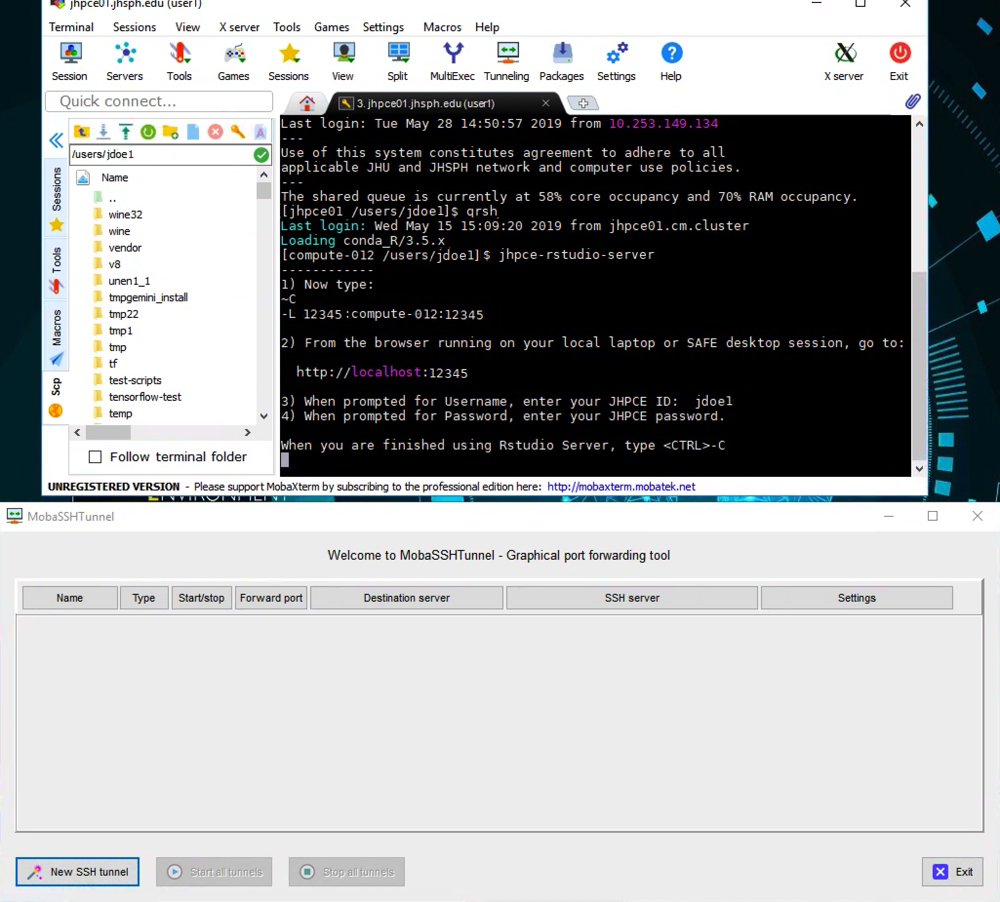
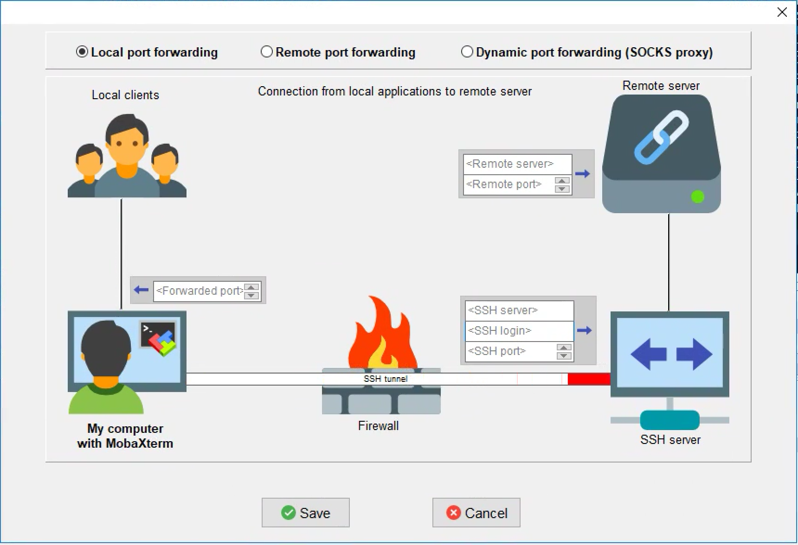
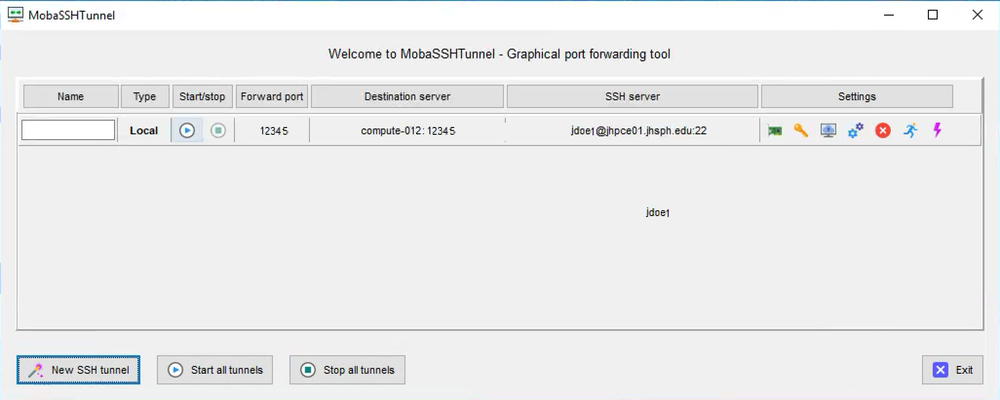
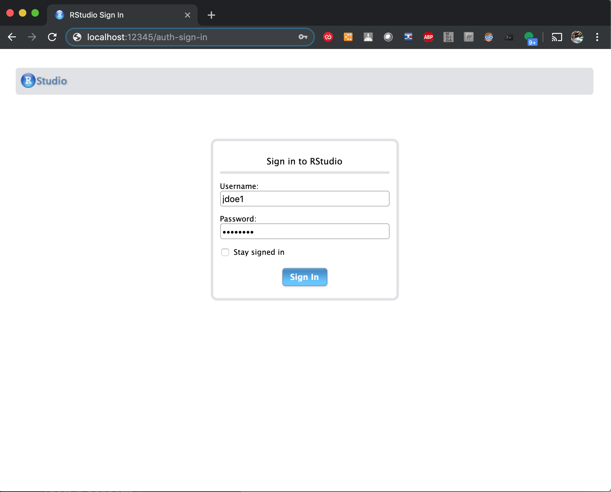
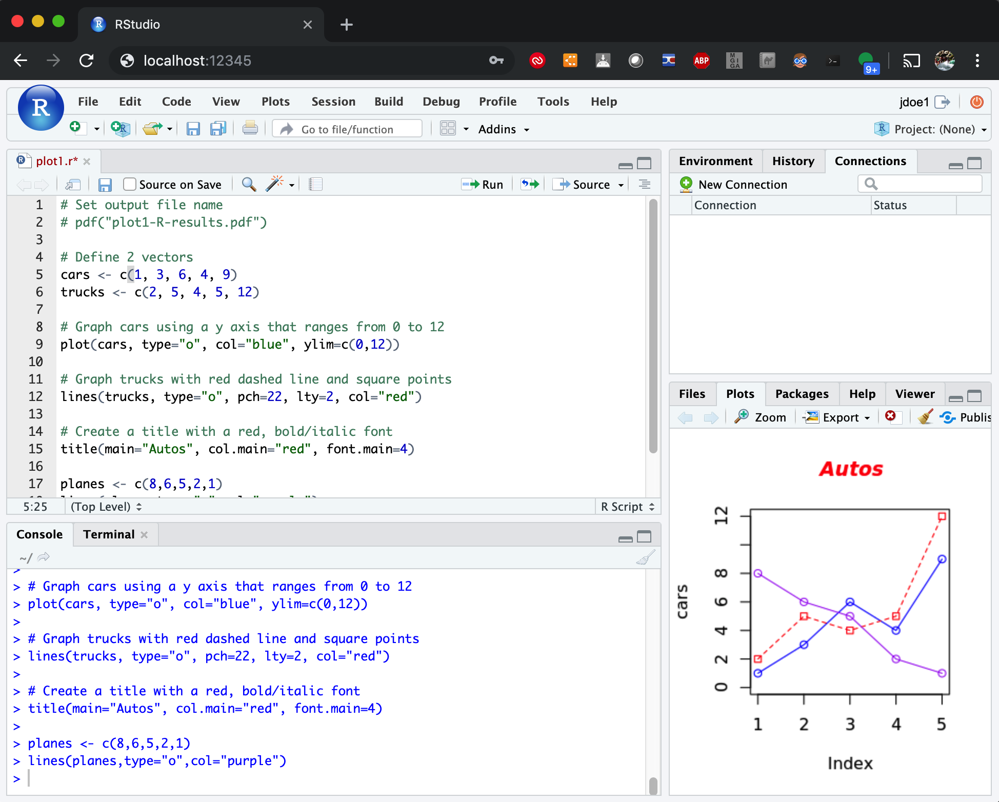

R Basics¶
- R
- RStudio
- RStudio Server
Authoring Note
Jeffrey started copying over RStudio and RStudio Server images and text from the old web site. Then switched to another task. So those sections, especially, need careful review in this document. They may look complete but is not.
Authoring Note
Multiple other documents refer to this one. If it is decided to break this document up into multiple documents, those reference links will need to be updated.
We have a version of R available as a module.
This version of R is also known as conda_R. It was built with conda and contains many extra packages commonly used on the cluster.
You can install your own packages to your home directory, as described in this document about building your own R and python pkgs. You can also install your own version of R in your home directory, preferably using conda.
Examples of Running R¶
During orientation, participants are shown a number of example files stored in a directory copied into new account home directories. There is a copy of the latest set of those in the directory /jhpce/shared/jhpce/class-scripts/
We have one set for users of the main cluster and a second for users of the C-SUB.
You can copy the latest files into your home directory with this command, replacing "clustername" with either "jhpce" or "c-sub"
rsync -av /jhpce/shared/jhpce/slurm/class-scripts/clustername/ $HOME/class-scripts
For that rsync command to work correctly, there needs to be a trailing slash on the path to the originals of the class-scripts.
Running R Interactively¶
In $HOME/class-scripts/R-demo there are two files, a SLURM batch job file and an R program file.
cd $HOME/class-scripts/R-demo- Inspect the batch job file:
cat plot1.sh srun --pty --x11 bashmodule load conda_R- Run plot1.r:
R CMD BATCH plot1.r - Running the program creates a file "plot1-R-results.pdf"
- You can view it with a program or a web browser:
xpdf plot1-R-results.pdf &chromium-browser file:///$HOME/class-scripts/R-demo/plot1-R-results.pdf &
Running R In A Batch Job¶
- Inspect the batch job file:
cat plot1.sh - Submit the job to run:
sbatch plot1.sh - See your
Examples of Running RStudio¶
Running from the Command Line¶
srun --pty --x11 --mem=10G bashmodule load conda_Rmodule load rstudiorstudio &
Running via the Web Portal¶
Please see our page about using it.
Running RStudio Server¶
Running from the Command Line¶
Depending on which cluster you are using, run one of the following two scripts after starting an interactive session and landing on a compute node. (The discussion below assumes that you are on the jhpce cluster.)
- jhpce-rstudio-server
- csub-rstudio-server
Rstudio Server is a web based environment for developing R programs. On the JHPCE cluster we have put together a script called “jhpce-rstudio-server” which will allow you to run your own personal copy of Rstudio Server and access it from a browser on your laptop or desktop. When the “jhpce-rstudio-server” program is run, it starts an instance of the Rstudio Server web server within a Singularity image on a unique port number, and then provides instructions for setting up an ssh tunnel to allow you to access Rstudio Server from your local system.
You will need to perform one step to enable access to this Rstudio Server from your local laptop/desktop; specifically, you will need to add a tunnel to your existing ssh session to the JHPCE cluster.
Tip
In UNIX, you send an interrupt signal to a running foreground program using the key combination Ctrl+C This is historically written as ^C Note that you DO NOT actually use the SHIFT key to capitalize the C. The way it is written is misleading. You do NOT type Ctrl+Shift+C. However this ^C is the way it has been written for decades, and we will do so.
Warning
However, you DO need to capitalize the letter c when trying to send an interrupt signal to the ssh program on Mac or Linux computers. The key combination for an ssh interrupt is ~ SHIFT c or ~+Shift+C
For Mac or Linux computers:¶
To add this tunnel, first type ~C (while holding down SHIFT, press “~” then “C”). The ~C is used to send an interrupt to your ssh session. The ~C will likely not show up, but you should see an “ssh>” prompt as a result. At this “ssh>” prompt you activate the tunnel by typing -L XXXXX:compute-YYY:XXXXX . This will allow your laptop/desktop to access the compute node compute-YYY on port XXXXX (in the above example, the port used was 12345 and the compute node used was compute-012).
For Windows computers, or from the SAFE Desktop:¶
If you connected to the JHPCE cluster with MobaXterm from a Windows-based system or SAFE desktop, you should ignore the first step (entering ~C and adding the local tunnel).
Instead, you will need to add a tunnel from MobaXterm.
Before setting up the tunnel you may find it helpful to set up an SSH key using the steps at this page about ssh While not a requirement, this will eliminate the need to login using your password and Google Verification Code. Note that if you are setting up the tunnel for the C-SUB, you will not be able to use SSH keys due to the enhanced security of the C-SUB.
To start, click on the “Tunneling” icon at the top of MobaXterm, and you should see the window below:

Click on “New SSH Tunnel”, and you should see:

Enter the following in the window:
- For “Forwarded Port”, enter the port number displayed (this is 12345 in the example)
- For “Remote Server”, enter the compute node (compute-012 in the example)
- For “Remote Port”, enter the port number (12345 in the example)
- For “SSH Server”, enter “jhpce01.jhsph.edu” if you are on the JHPCE cluster, or “jhpcecms01.jhsph.edu” if you are on the CSUB.
- For “SSH Login”, enter your JHPCE cluster login name (jdoe1 in the example)
- For “SSH Port”, enter “22”
Then click “Save”, and you’ll be take back to the “MobaSSHTunnel” screen with your new tunnel displayed.

Next, click on the yellow “Key” icon  and browse to the location of your private key (the “.ppk” file). Now start your tunnel by clicking on the Green triangle icon
and browse to the location of your private key (the “.ppk” file). Now start your tunnel by clicking on the Green triangle icon in the “Start/Stop” column.
in the “Start/Stop” column.
Now that the tunnel is established, you can then access Rstudio Server from your laptop/desktop by using a web browser, and connecting to the url, http://localhost:XXXXX . Once connected you will be prompted for your login and password, and you will need to enter you your JHPCE login and password at this point.

Once you enter your login and password, you should see Rstudio running in your browser.

Shutting down the Rstudio Server¶
When you have finished using Rstudio Server, you should close the browser tab or window that you are using to run Rstudio Server, and then return to the ssh session where you ran the “jhpce-rstudio-server” command. To stop the Rstudio Server, type “^C”. You will then be given a few additional steps to run to deactivate the port forward. As with the establishment of the tunnel, these steps are for MacOS and Linux based desktops/laptops. You will again be prompted to type “~C”, and then enter “-KL XXXXX” at the “ssh>” prompt to stop the forwarding (NOTE: you’ll need to hit
[login31 /users/jdoe1] $ srun --pty --x11 --mem=10G bash
Last login: Wed May 1 17:02:29 2019 from login31.cm.cluster
Loading conda_R/3.5.x
[compute-012 /users/jdoe1] $ jhpce-rstudio-server
------------
1) Establish your SSH tunnel.
* Windows users see: https://jhpce.jhu.edu/sw/rstudio-server/
* Mac or Linux Desktop users, please type:
~C
-L 12345:compute-012:12345
2) From the browser running on your local system or SAFE desktop, go to:
http://localhost:12345
3) When prompted for Username, enter your JHPCE ID: jdoe1
4) When prompted for Password, enter your JHPCE password.
When you are finished using Rstudio Server, type <CTRL>-C
~C
ssh> -L 12345:compute-012:12345
Forwarding port.
****Cleaning up...
------------
Now type:
~C
-KL 41354
[compute-012 /users/jdoe1] $
[compute-012 /users/jdoe1] $**~C**
ssh> **-KL 12345**
Canceled forwarding.
[compute-012 /users/jdoe1] $ exit
[login31 /users/jdoe1] $ exit
For Windows desktops/laptops, you should also use “^C” to terminate the Rstudio Server, but to stop the tunnel you will need to return to the MobaSSHTunnel screen, and use the “Stop” icon in the Start/Stop column. You can keep this tunnel configuration in MobaSSHTunnel, and reuse it the next time you run Rstudio Server, however you will need to edit the tunnel configuration and change the “Remote Server” to match the compute node you are running on.
FAQs/Comments¶
Q) Why did you do this? R works just fine for me on the cluster!
A) On the JHPCE cluster we have historically had several ways to run R programs. Often people will use the text-based version of R to run programs, and that works well for a lot of people. Some people prefer to work in a graphical environment, so we also have the X11-based “Rstudio” available on the cluster, which is great, except that on a slower network connection, this can get quite laggy. The web based Rstudio Server provides the same graphical version available in Rstudio, but over a much lighter network protocol than the X11-based Rstudio, so it is much faster and more responsive to use.
Q) Why not just set up a dedicated web server to run Rstudio Server like I had back at ZZZZ?
A) Rstudio Server does not play well with clusters. For us to run a dedicated Rstudio Server server, we would need to purchase a fairly large system with lots of RAM and CPU power. This was considered, but in the end was deemed cost prohibitive, and it didn’t allow the use of the JHPCE cluster resources to run R programs. This solution allows the nice web-based Rstudio Server to be used, while making use of the existing CPU and RAM resources available on the cluster.
Q) My program can’t run because it needs XXX package!
A) The R that is run within the Rstudio Server is completely separate from the default version of R that is used on the JHPCE cluster, therefor you may need to install packages using the install.packages() function, or through the Rstudio Server GUI .
Q) I forgot to cleanly disconnect from the Rstudio Server/My session got disconnected.
A) This should be fine. Your interactive srun session will eventually time out and will kill the Rstudio Server that was running. You may get warning messages about ports being in use – if so, please wait a few minutes and try again.
Q) When I try to add the port forward, I get an error message about “Port is in use”. How do I fix this?
A) You can only run one instance of Rstudio Server. You likely have another SSH session running that has the port forward lingering. If you had been using Rstudio Server in another SSH session, you will need to either need to log out of that ssh session, or run the “~C” “-KL XXXXX” command to tear down the port forward.
If you have any questions about using Rstudio Server, please feel free to email us at bitsupport.